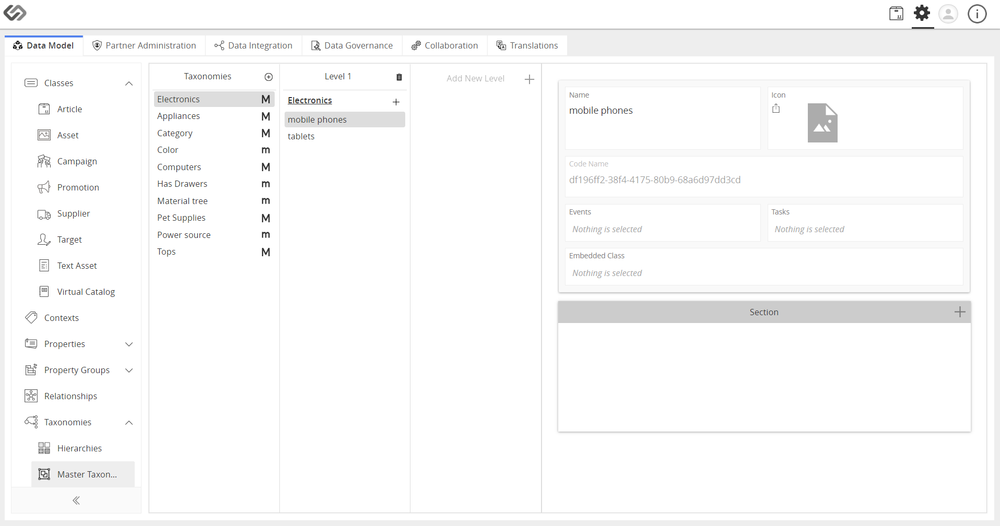

Manage Master Taxonomies¶
The Manage Master Taxonomies is an admin feature that sets up Master Taxonomies that are based on Masters so that each level of taxonomy is represented by a Master Tag Group.
| Key Term: |
|
| Description: |
|
| Related topics: | |
| Application: |
|
How-to: Create a Master Taxonomy¶
To create a Master Taxonomy, follow these steps:
- Log in and click on the Administration button.

- Click on Taxonomies and select Master Taxonomies.
- Click on the “+” icon to create a new Master Taxonomy.
- Enter the name and enable the slider to create a major taxonomy.
- Click on the Create button.
- Click on the “+” sign in the Section tab to add a property collection.
- Select the created taxonomy and add sub-levels to it to create a sub-taxonomy.
To create sub-levels for a taxonomy, follow these steps.
- Select a taxonomy.
- Click on Add New Level.
- Enter the name in the search bar.
- If the name exists, it will appear in the search results. Otherwise, click on “Create <name>” to create a new one.
- Click on the “+” next to the parent taxonomy to add sub-taxonomies.
- Enter the name for the sub-taxonomy.

- Repeat the previous step if you want to add more levels to the existing sub-taxonomies.